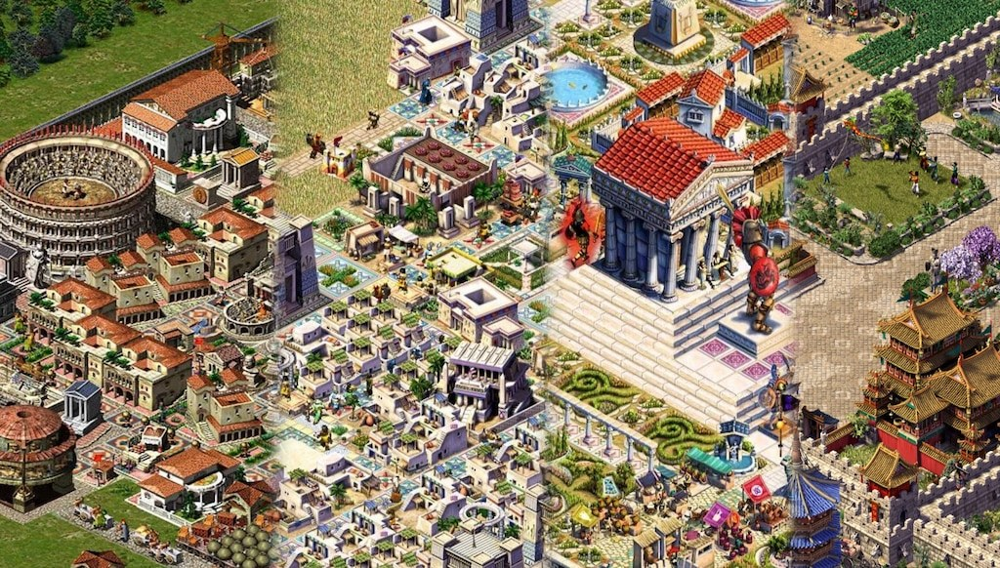
In the 90s and 2000s the studio Impressions Games released excellent historical city-building simulators. I played every game in the series — from the unforgettable Caesar 3, which was actually the very first computer game I played on my father's computer, to Emperor about ancient China. But the Egyptian Pharaoh and the Greek Zeus stuck in my memory far more vividly, though I couldn't quite say why.
The only serious non-technical difference between Pharaoh and Zeus was the graphical assets; internally the entire team changed and, according to old-timers, the engine changed too, but the series was already well known, so the numerous differences were hidden where possible by carrying over various mechanics from Pharaoh into Zeus almost unchanged. And it seems they overdid it — to many people the game now feels more like an add-on than a full numbered installment of the series.
And yet these relatively minor differences in mechanics, taken together, make Zeus the more polished game — but polished in the QoL (Quality of Life) sense: dear players, we'll heap some changes on you, but most of them simply make the game easier without really changing anything. That's a little saddening, because from a new installment you expect the chance to build a different, beautiful city, not the same one you've already built in the desert for 50 missions straight.
But the differences are there, and many players who got into the series through the creation of the disciples of the genius Simon Bradbury (the maestro left the studio after Caesar to make Stronghold) — through Zeus — consider it the best in the series. Whereas those who started with Pharaoh consider this very installment the best, like me for example; I won't even mention the fans of the Romans — they have their own crowd and their own gods over there. I'll also have to touch a little on the remake Pharaoh: A New Era (since it came out and tried to encroach on its ancestors' laurels), and the comparison will, unfortunately, not be in its favour, so don't take offence.
The first difference in old Pharaoh is the distribution of workers, and it's exactly this that the Pharaoh: A New Era re-release changed to work the way it does in Zeus — but it was one of those small touches of the original Pharaoh that made the city's development believable. It doesn't look great when your workers magically run to the farthest corners of the map and work there. In Pharaoh, when you build a building that needs workers (and that's almost any building), a special “recruiter” appears and starts walking along the road looking for the nearest residential houses from which to take workers; and he doesn't head straight for the houses, he walks “just because”, and at intersections he turns in a “random” direction. The randomness here isn't really random — it's generated at level start for every tile, because computers back then weren't very powerful and producing true randomness was expensive, so they baked it into every tile of the map.
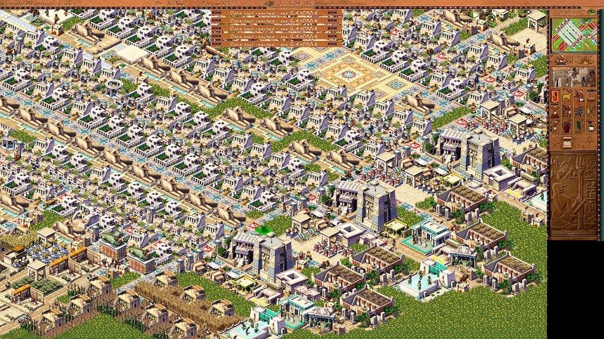
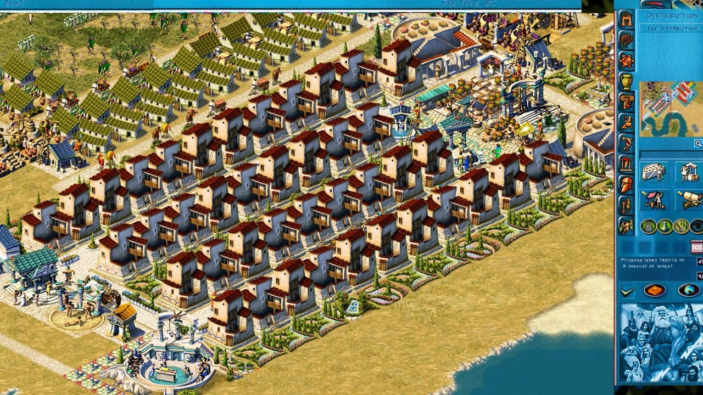
How it's done in the game's code (I toggle it with an option)
void building::common_spawn_labor_seeker(int min_houses) {
if (g_city.population.current <= 0) {
return;
}
// check whether the global pool is enabled
if (!!game_features::gameplay_change_global_labour) {
// and simply check that any houses are connected to a road
houses_covered = std::min(300, distance_from_entry ? 2 * min_houses : 0);
return;
}
// otherwise use the logic that checks for nearby houses
// around the building
if (houses_covered > min_houses) {
return;
}
if (has_figure(BUILDING_SLOT_LABOR_SEEKER)) { // no figure slot available!
return;
}
create_roaming_figure(FIGURE_LABOR_SEEKER, FIGURE_ACTION_125_ROAMING, BUILDING_SLOT_LABOR_SEEKER);
}In Zeus, residential houses simply add workers to a global pool from which the other buildings automatically draw them — no recruiters, of course, and no need to build housing next to the work zones either. This greatly simplifies creating remote production “outposts” — for example, you can build silver mines right at the deposit, or trade docks somewhere by a convenient bend of the river.
All you needed for that in Pharaoh was a couple of first-level huts. You can supply them with water and food if convenient — then more people move in, which gives a population boost (and that was almost always a plus) — but it's not mandatory. The main thing is simply to ensure housing within reach of the workplace.
This worker-distribution system in Pharaoh reduces, but doesn't entirely remove, the importance of caring about the well-being of the digital city's residents, and even in a rich city overflowing with goods there will most likely be slums — temporary settlements in inconvenient or remote spots where there's no point building the whole infrastructure. In Zeus, by contrast, any houses below the maximum level are a waste of space.
You can fit more people there — and thus increase the labour force and the tax base — if you just place an extra warehouse with olive oil and wool nearby to upgrade the houses.
By the way, in Pharaoh “poor” houses don't pay taxes, while in Zeus everyone does
int figure_tax_collector::provide_service() {
int max_tax_rate = 0;
int houses_serviced = figure_provide_service(tile(), &base, [&] (building *b, figure*) {
// rtti without dynamic_cast: check that the building is a house and not,
// say, a library
auto house = b->dcast_house();
if (!house) {
return;
}
if (house->house_population() > 0) {
// how much a house pays is configured via a config
// in Zeus houses pay simply x * house level
// the simplification did the game no favours, it dropped the difficulty a lot
int tax_multiplier = model_get_house(house->house_level()).tax_multiplier;
if (tax_multiplier > max_tax_rate) {
max_tax_rate = tax_multiplier;
}
if (house->house_level() < HOUSE_ORDINARY_COTTAGE) {
runtime_data().poor_taxed++;
} else if (house->house_level() < HOUSE_COMMON_MANOR) {
runtime_data().middle_taxed++;
} else {
runtime_data().reach_taxed++;
}
// another gamedev pattern for
// storing different data without allocations
// in a single memory block
auto &housed = house->runtime_data();
housed.tax_collector_id = home()->id;
housed.tax_coverage = 50;
}
});
base.min_max_seen = max_tax_rate;
return houses_serviced;
}In Pharaoh, if you need to build a gold mine in the middle of the desert hoping to get gold from it, it's often simpler to just give up on it and set up production of pottery and beer, which will bring more profit through trade. Understanding this nuance doesn't come right away, but around the tenth mission, and you can only wonder whether it's a bug or a deliberate feature; personally I lean toward the former.
Zeus definitely makes the game more pleasant and easier to manage, but Pharaoh's approach lends the simulation realism, imperfection, and the attempts to make everyone happy break the balance and add challenges. I won't say I dislike the global worker pool, but if a game takes away from the player such small joys that can be discovered in the middle of a campaign, then the designer somewhere shirked their direct duties. Still, Zeus's approach clearly wins if we play the campaign as a story rather than a sandbox, the way it's done in Pharaoh. By the way, Pharaoh: ANA took a bit from both approaches without understanding the nuances, threw in some mini-quests from the world of mobile games on top, and the result is a complete mess.
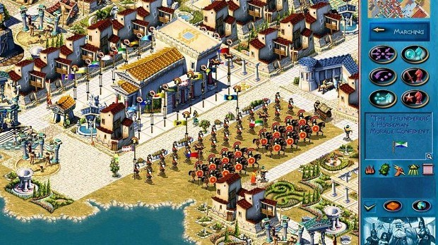
The second important difference between the games is the missions — or rather the presentation style and what's expected of the player. In Zeus the campaign is split into series of several “adventures”, and in each one the player builds a main city and founds several colonies. Each colony gets its own separate mission and develops to around 1000–2000 inhabitants — that's less than half the size of the main city, but it's built with a specific goal, i.e. it really is a mission and not a separate city.
Sometimes the limitations of such colonies are implemented fairly harshly — through disabled mechanics — and sometimes through a lack of space or resources, but the game almost never forces you to spend resources building a full military infrastructure in a colony. Often it's enough to place one or two temples to different gods — in Zeus this element of the game was pushed to the foreground, which is historically understandable: Greece is the homeland of elephants, I mean gods, but from a game-mechanics standpoint they were simply too lazy to balance the missions properly. The main city in this case provides free access to key goods, which lets you build an almost autonomous infrastructure, exporting surplus to the colonies, and this creates a constant “appearance” of load on the economy and trade.
In Pharaoh, the game is divided into four periods: a tutorial period, and then the Old, Middle and New Kingdoms. Each period has several episodes, and each requires building a new city from scratch; some missions resemble Zeus's colonies — with simple objectives and limited maps — while others resemble the “main” city — with high requirements but also a rich map; it's not entirely clear whether Zeus developed this idea into colonies, or whether the mission styling itself simply led to such a turn of events. The main and perhaps saddest difference in the missions' game design is that the game doesn't preserve the main city between episodes, and each level is a full restart, regardless of your success on the previous one. For early-2000s games this was a sacred cow, and even Simon's crew didn't dare break it, whereas the remake folks weren't afraid to break it and did — only it's not a compliment: now we just have a set of missions tied together by neither story nor history.
In Zeus, the final episode of the first adventure ends with the task of defeating a group of treacherous allies in a decisive battle that requires a developed military infrastructure, and here the game forces you to fully use the army mechanic, which the player wasn't ready for, because there's fairly little combat. But it's done with the same city that developed over the whole episode — not from scratch, but starting straight away with developed production.
In Pharaoh a mission of similar difficulty will start on a new map with the empty banks of the Nile, and again you'll have to lay out blocks of basic housing, build farms, aqueducts and warehouses — but in my view this isn't a downside, because over the previous missions the game lets you try a heap of options to find the one that suits you personally. This first hour of each level passes quickly before you can move on to more interesting and purposeful tasks, and it only starts to get boring right around the 40th mission, i.e. the very end of the game.
What was seriously reworked — though “reworked” isn't quite the right word here, more like thoroughly broken — is the housing system. In Zeus housing is divided into two types: common and elite. Common houses always occupy a 2×2 area, and elite ones 4×4, and that's basically it: just keep adding the necessary buildings nearby for the level — and sometimes the game bugs out and simply raises or lowers a house's level for no visible reason, and they never fixed it even in patches, meaning you could literally flood the whole map with first-level houses and complete the mission without any shortage of workers.
In Pharaoh, by contrast, housing starts with a 1×1 hut and grows in size as new services are provided. The transition from common to elite housing happens on the upgrade from 2×2 to 3×3. In all, Pharaoh has 20 housing development levels, whereas Zeus has 11 (or 12, if you count emptied elite houses that lost the required service level). And flooding the map with houses here not only doesn't help but starts to hurt: at some point a negative migration coefficient kicks in and people start leaving the city. This logic was effectively removed from Zeus, leaving only a periodic arrival of new settlers, and the new Pharaoh took that as its basis.
Here's a bit about the migration update
void city_migration_t::update_status() {
auto& params = g_migration_params;
const auto &sentiment = g_city.sentiment;
auto it = std::find_if(g_migration_sentiment_influence.begin(), g_migration_sentiment_influence.end(), [&] (const auto& t) {
return sentiment.value > t.s;
});
// Determine how the population's mood influences migration
// Set the migration percentage based on the population's mood
// If a matching threshold is found, use the corresponding influence percentage, otherwise 0
percentage_by_sentiment = (it != g_migration_sentiment_influence.end()) ? it->i : 0;
percentage = percentage_by_sentiment;
immigration_amount_per_batch = 0;
emigration_amount_per_batch = 0;
// Population cap check
// If the population cap is reached, stop immigration
// sometimes a mission sets its own cap
if (population_cap > 0 && g_city.population.current >= population_cap) {
percentage = 0;
migration_cap = true;
return;
}
// war scares immigrants away
if (g_city.figures_total_invading_enemies() > 3 && percentage > 0) {
percentage = 0;
invading_cap = true;
return;
}
// Handle immigration (positive percentage)
if (percentage > 0) {
// immigration
if (emigration_duration) {
emigration_duration--;
} else {
// Compute the number of immigrants per cycle based on the percentage
immigration_amount_per_batch = calc_adjust_with_percentage<int>(params.max_newcomers_per_update, percentage);
immigration_duration = 2;
}
}
// Handle emigration (negative percentage)
else if (percentage < 0) {
// emigration
if (immigration_duration) {
immigration_duration--;
} else if (g_city.population.current > 100) {
emigration_amount_per_batch = calc_adjust_with_percentage<int>(params.max_leftovers_per_update, -percentage);
emigration_duration = 2;
}
}
}
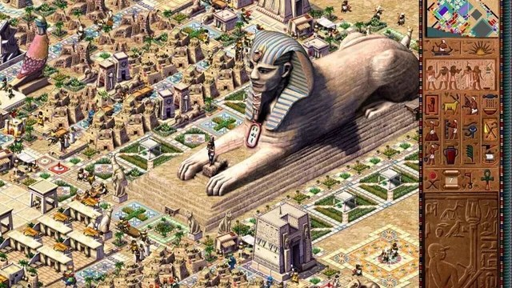
The requirements for upgrading housing in Pharaoh grow in a similar way to Zeus: more and more goods and entertainment are needed, but Pharaoh adds even more levels through religious and everyday services. To reach the maximum housing level in Pharaoh, the player has to provide access to places of worship of different gods, as well as a host of specific services — such as a dentist, a scribal school, a mortuary, a physician, a court and a library. And fitting them all nearby is a task along the lines of “plot all the paths in your head and place the houses where they intersect”. On top of that, high levels require several types of food available at once.
How houses consume food in Pharaoh
resource_list building_house::consume_food() {
if (!hsize()) {
return {};
}
// shared data that for any building sits next to
// the common data, but is unique per building type
auto &d = runtime_data();
int num_types = model().food_types;
uint16_t amount_per_type = calc_adjust_with_percentage<short>(d.population, 35);
if (num_types > 1) {
amount_per_type /= num_types;
}
d.num_foods = 0;
resource_list food_types_eaten;
if (scenario_property_kingdom_supplies_grain()) {
d.foods[0] = amount_per_type;
food_types_eaten[RESOURCE_GRAIN] += amount_per_type;
d.num_foods = 1;
return food_types_eaten;
}
if (num_types <= 0) {
return {};
}
// a house eats the cheap food first and the expensive food later
// in Zeus a house eats a bit of all available food, a simplification
// that partly broke the house-growth mechanic
for (int t = INVENTORY_MIN_FOOD; t < INVENTORY_MAX_FOOD && d.num_foods < num_types; t++) {
const uint16_t exist_amount = std::min(d.foods[t], amount_per_type);
d.foods[t] -= exist_amount;
d.num_foods += (exist_amount > 0) ? 1 : 0;
e_resource food_res = g_city.allowed_foods(t);
food_types_eaten.push_back({ food_res, amount_per_type });
}
return food_types_eaten;
}And how resources are consumed
resource_list building_house::consume_resources() {
if (!hsize()) {
return {};
}
resource_list good_types_consumed;
auto &d = runtime_data();
const model_house& model = model_get_house(house_level());
auto consume_resource = [&] (int inventory, uint16_t amount) {
if (amount <= 0) {
return;
}
amount = std::min(amount, d.inventory[inventory]);
d.inventory[inventory] -= amount;
good_types_consumed.push_back({ (e_resource)inventory, amount });
};
// and this kind of "consume every resource type" is how it's done in Zeus
// if a resource exists it gets used, again a simplification
// but one that heavily changes the balance of goods in the city
consume_resource(INVENTORY_GOOD1, model.pottery);
consume_resource(INVENTORY_GOOD2, model.jewelry);
consume_resource(INVENTORY_GOOD3, model.linen);
consume_resource(INVENTORY_GOOD4, model.beer);
return good_types_consumed;
}All of this leads to the fact that, to develop a single housing block to the maximum level in Pharaoh, you have to build an enormous number of service buildings. And here one of the most irritating problems shows up, which can loosely be called “Egyptian stupidity” — dumb pathing logic. Goods and services are spread by walkers spawned by service buildings: the physician's building spawns a character who walks along the road and services every house he passes. The problem is that at forks these walkers choose their direction at random — and just how “random”, I've already described. That is, the physician, instead of going left and walking around the whole housing block, may go right, pass storehouses, temples and fountains, and return to his building without ever reaching the district that needed him. That's your physician; and if even a few of them “fail” their role because of this random choice, houses can start to degrade.
Which led to rather amusing situations, where the game effectively forces you to build looped districts: houses sit on the inner side of the road and service buildings on the outer side, which guarantees the walkers pass through regardless of whether they turn left or right when they appear.
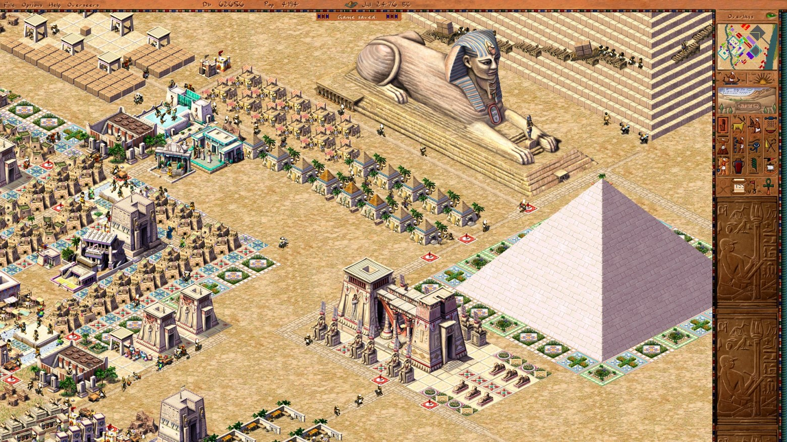
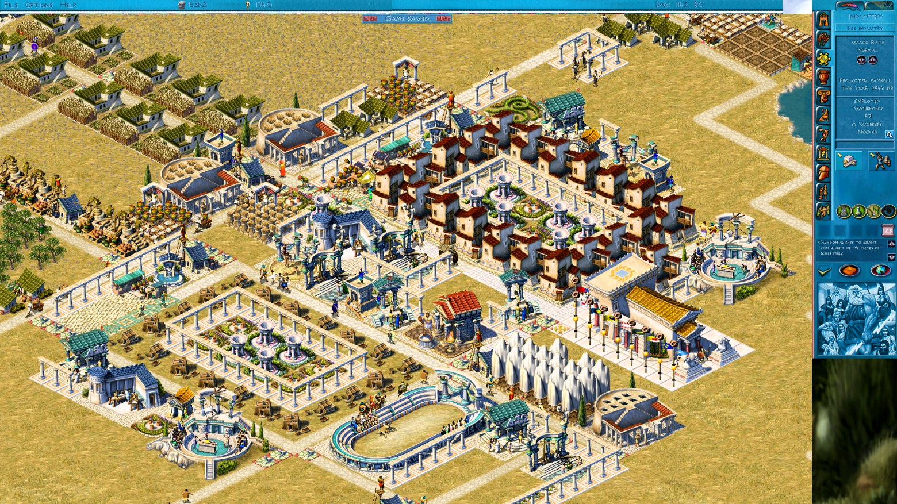
The player comes to the idea of building ring-shaped blocks around the tenth mission, but the very fact of “Egyptian stupidity” is annoying, and I described the reasons above. Weak hardware led to simple heuristics that didn't always work well. I was very surprised by the implementation of this system in Pharaoh when I was figuring out how it's done, especially since it works in tandem with complex housing requirements, a multitude of resources and service buildings. I think nowadays our hardware is powerful enough, and we could easily make a proper direction heuristic instead of a random direction — but that's for future updates, and for now the “historical stupidity” is preserved.
How it was done in the game's code
// most of the data in the game is static
// there are almost no dynamic allocations, which is normal for games of that era
static grid_xx random_xx = {0, FS_UINT8};
void map_random_clear() {
map_grid_clear(random_xx);
}
void map_random_init() {
int grid_offset = 0;
// in this loop we hand out random turns on the map tiles
// at level start, the "Egyptian stupidity"
for (int y = 0; y < GRID_LENGTH; y++) {
for (int x = 0; x < GRID_LENGTH; x++, grid_offset++) {
random_generate_next();
map_grid_set(random_xx, grid_offset, (uint8_t)random_short());
}
}
}
int map_random_get(int grid_offset) {
return map_grid_get(random_xx, grid_offset);
}
io_buffer* iob_random_grid = new io_buffer([](io_buffer* iob, size_t version) {
iob->bind(BIND_SIGNATURE_GRID, &random_xx);
});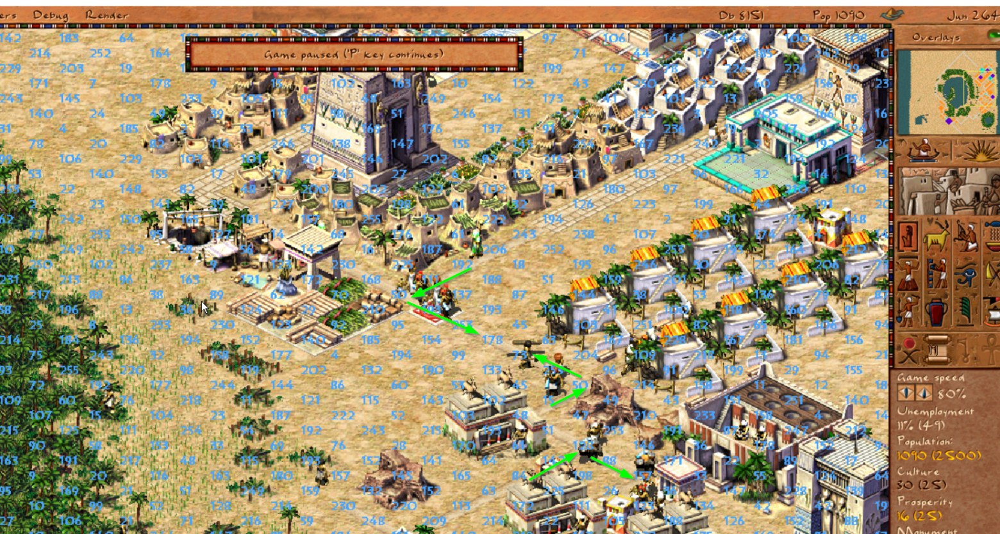
The screenshot shows where residents will most likely “randomly” turn, but players didn't have this visualization tool. This “randomness” starts to genuinely get in the way around the middle of the game. Pharaoh follows a “notional” historical progression, and new buildings unlock gradually — Archaic, Old, Middle and New Kingdoms — and as technology develops in each scenario you gain access to something new. And each new level brings yet another building that you have to somehow cram into your block, which sometimes leads to a full rebuild of an established district layout.
In Zeus, by contrast, the campaign order is based on difficulty rather than historical sequence; the game also doesn't unlock buildings all at once, but by the middle of the first adventure you already have access to almost all the buildings, which lets you work out a style once and use it for the whole game — but this simplification makes the game somewhat boring overall after the midpoint. In Pharaoh, on the contrary, each new scenario is a new game with its own quirks, especially in the later periods when the infrastructure becomes more complex — which is exactly why I love it.
In the Pharaoh: ANA remake all these decisions were removed and mobile mechanics added: now happy gods can magically speed up the construction of a monument by a certain percentage — all that's missing is microtransactions and coins above the houses that you have to collect. That is, if you regularly hold festivals and maintain religious infrastructure, it affects the pyramid's construction speed no less, and sometimes more, than adding new brick workshops, and, as you might guess, it makes the city's development unbalanced without really being built into the gameplay. Because any “divine” interventions are factors that are very hard to balance due to their unpredictability; the situation is roughly the same as with the random turns.
I remember the mission to build the pyramids of Giza — back then, in 2001, it took something like 100 in-game years, or a week of evenings several hours long. At that point I had a very unbalanced economy in the city (though with my teenage mind I didn't see it), whereas I do see it now that I have the recovered sources in hand and can look at and tweak various knobs — but back then it felt like a super-hard mission. It was an Old Kingdom mission, and it wasn't positioned as a final test of logistics mastery, although in fact it was one, and going by forum reviews it remains one of the hardest peaceful missions in the game.
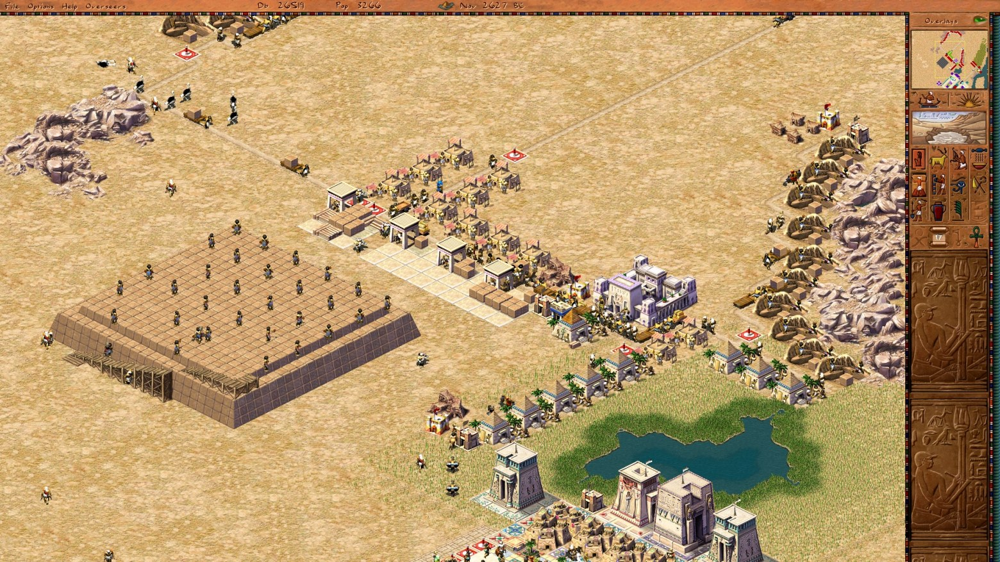
Is Zeus better than Pharaoh?
These are different games, made by different teams and different designers, even if in similar packaging, and they should be played differently. Zeus has a chain of 5–8 episodes linked by a single city that develops gradually. In Pharaoh, by contrast, each of the 50 missions is a separate puzzle that starts from a blank slate. Zeus's simplified housing blocks helped cope with the “Egyptian stupidity”, whereas in Pharaoh you had no choice but to become a master of city planning.
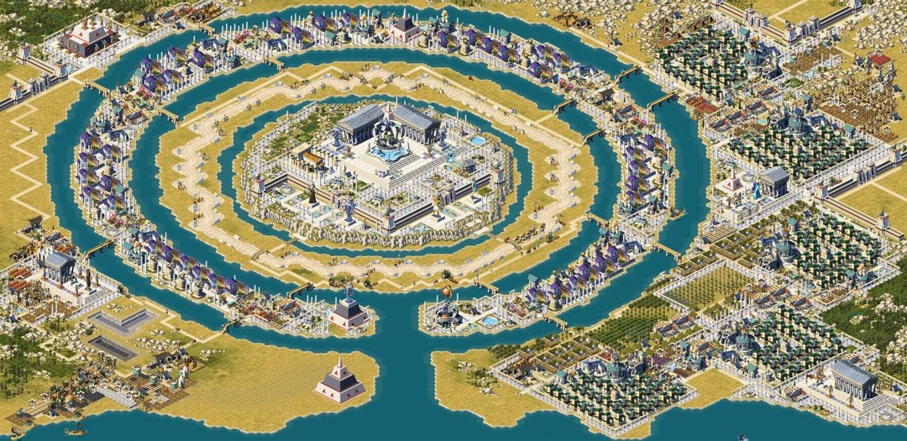
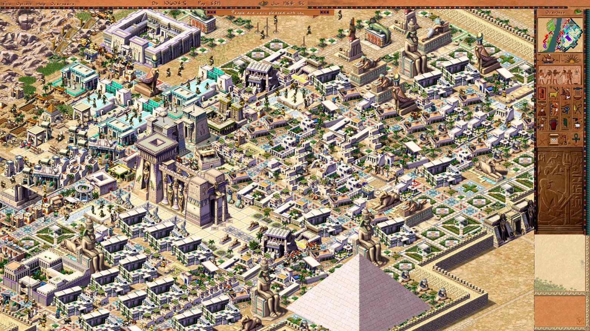
P.S. What I really like is that we managed, even in a trimmed-down form, to restore the functionality of this legendary — no exaggeration — game. If you like the aesthetics of Ancient Egypt and very old code, come to Akhenaten (you can now play in the browser too, it still needs the OG resources, for which special thanks to Roman Turchin). And I keep restoring the enemy system and combat, and believe me, there's a lot to learn there from the old games.
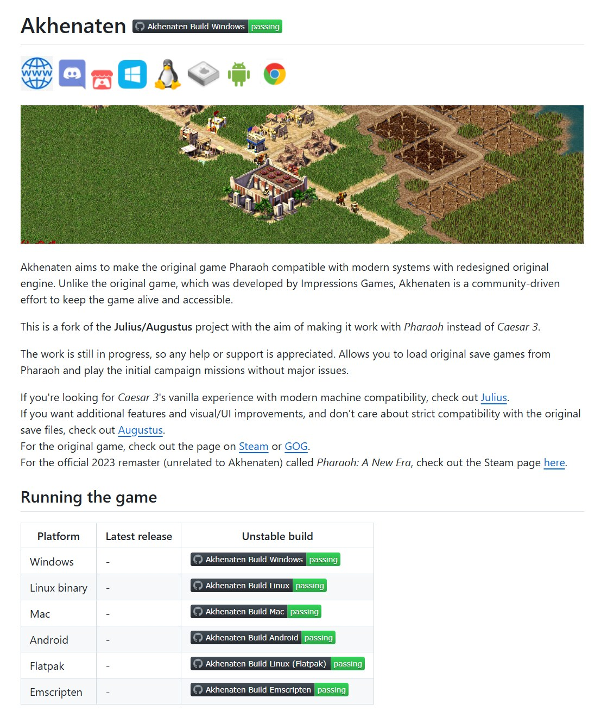
P.P.S. A little advertising for my programming course on Stepik.
About six months ago I published a series of articles on Habr about game development (you can start here), which was well received by the community. Friends and some Habr readers asked me to lay out this information in a more convenient and concentrated form — as a C++ course or one big article. I decided to float a trial balloon in the form of a small course on programming in C++ without allocations; it really is small — only 45 lessons — and it picked up a couple of articles from the series, but if you like it, I might try to make another on interesting topics (Programming without the boredom. C++ without memory allocations). The course is paid, to filter out hunters for free certificates and people who like to make noise in the comments. For those who read me — promo code (HABR50); if you need a bigger discount or a free invite, drop me a DM.
← All articles